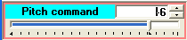

Indicadores/controlos LdP
Para facilitar a compreensão das funcionalidades desses componentes, primeiramente analisaremos o objetivo a ser alcançado. Na figura abaixo, no topo, temos dois blocos ("Nacelle emulator" e "Controller emulator") usados em um simulador particular e com certas conexões entre eles. Um deles refere-se a "Generator rpms".

Na parte inferior, temos os mesmos blocos, mas desta vez o sinal de saída "Generator rpms" é passado através de um sinóptico para que o usuário possa ver seu valor em tempo real. Neste sinóptico, temos dois indicadores: um "linear" e um "circular". O indicador circular é "acoplado" ao linear. O indicador linear tem duas conexões: uma à esquerda (entrada) e outra à direita (saída). Em uma situação "normal", assume-se que esse componente deve se comportar como um mero indicador, ou seja, replicando o valor de sua entrada em sua saída.
No entanto, é possível pensar que durante a execução de uma simulação pode ser interessante ter um mecanismo fácil de usar que permite testar a reação de um dos componentes do simulador (neste caso, o "Controller emulator") quando o valor do sinal "Generator rpms" que recebe não corresponde à realidade (que é o valor do sinal "Generator rpms" saindo do "Nacelle emulator"). Isso poderia ser implementado adicionando outro "controle gráfico" (ou botão) ao sinóptico que permitiria esta funcionalidade: no entanto, esta solução teria a desvantagem de complicar o sinóptico e também torná-lo maior.
O componente linear LdP mostrado na figura acima resolve este problema adicionando a funcionalidade de ser capaz de trabalhar em três "modos":
•Em "modo de seguimento": neste caso, seu valor de saída corresponde ao seu valor de entrada, que também é o representado.
•Em "modo de força": neste modo, os vários subcomponentes (a entrada de texto e a barra) com os quais o usuário modifica a saída deste componente estão ativos, independentemente do valor de sua entrada.
Desta forma, o mesmo componente serve ambos os propósitos.
Mudar de modos é muito simples: basta clicar no componente e pressionar o "F6" chave, que muda entre os dois estados. A mudança para "força" pode ser protegida por uma palavra-chave.
Existe um terceiro modo chamado "display somente," cuja única função é servir como indicador, sem a capacidade de replicar o valor de sua entrada em sua saída. Este modo só pode ser selecionado durante a fase de desenvolvimento, não durante a execução.
Existem dois indicadores LdP, um para sinais analógicos e outro para sinais digitais.
Tipo de sinal |
modo de seguimento |
modo de força |
Analógico |
|
 Borda vermelha |
Digital |
borda verde |
borda vermelha |
Exemplos:
As figuras a seguir mostram algumas configurações usadas em determinados simuladores.